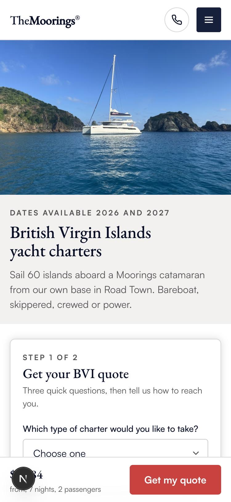
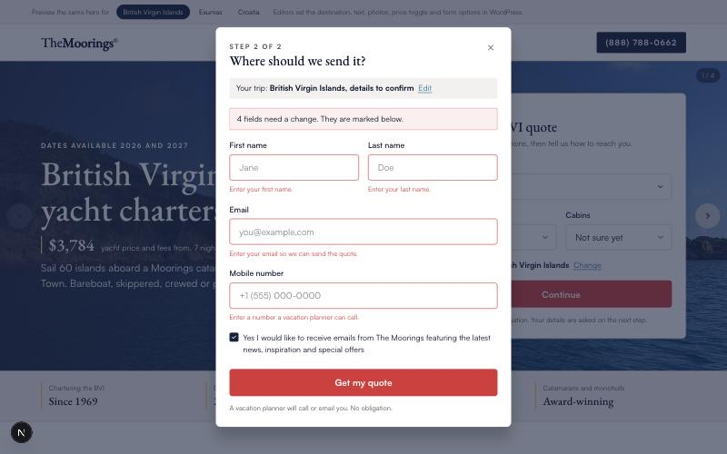

A ticket is a request to move a number
Tickets arrived as design asks with a wireframe attached. I wrote down how I actually work them as one Claude Code skill, so every ticket runs the same loop and the next one starts where the last one ended. Its first run shipped a paid landing page.

Four principles, on every ticket
- Metric first. Primary, secondary and guardrail metrics are named before any design.
- Evidence over intuition. An existing page uses its own data. A new page uses the closest analogue, past tests, competitors and benchmarks. Raw pulls are stored before anything is synthesised.
- Challenge the brief. Every ticket gets a Challenge block, even when it ends up agreeing with the brief.
- A case study every time, sized to the ticket, plus a log entry.
Eleven steps. I hold the six that need judgement
Intake, size, metric, evidence, hypotheses, design, instrumentation, measurement plan, ship, case study, readout and log. The skill runs the evidence pulls and the writing; it stops and asks at the size, the metric, the hypotheses, the plan and twice at shipping: the ticket comment, then the push. Never the merge. The design step hands off to the Helix skills; this skill never draws.
The first run: ask about the trip before the person
The brief was a hero with an embedded form, modelled on another brand's paid page, asking name, email and phone first. The evidence changed it. Every comparable form asks where, when and how many before who, so contact details moved to a second step. 81.5% of paid sessions were phones and paging the gallery was 29.9% of mobile taps, so the photos went first on a phone. One hypothesis per variant, three variants, one final.
Four ideas launched together would leave no way to know which one earned the result. So version 1 is the smallest page that can take a paid click, and the rest became a sequence, one variable each. Ship the smallest page that can take a paid click. Every idea after it gets a real baseline.

